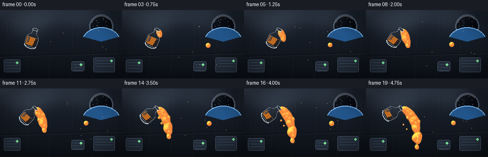
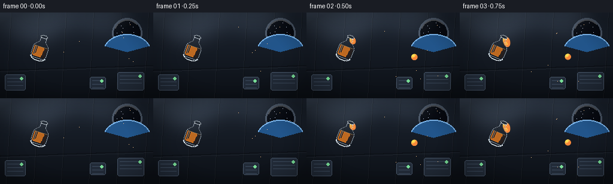

CODING AGENTS AS PIXEL WORLD MODELS
traex/Seed-2.1-Pro-0915 · phygen_003
点击播放 · 原生 RGB 像素
逐轮保存的候选
回放视频、检查图与代码变化。
每份候选均可单独播放。实际图片检查记录在下方工具轨迹中。
候选 01播放与检查图
点击播放 · 原生 RGB 像素


展开代码变化
--- 上一保存版本
+++ 本次保存版本
@@ -0,0 +1,293 @@
+"""Procedural text-to-video generator.
+
+Scene: a juice bottle is slowly tilted and poured inside a space station.
+In microgravity the juice does not fall: it leaves the mouth as a glossy
+stream and forms floating, wobbling globules that drift and coalesce.
+
+Pure numpy + PIL, deterministic, no external assets.
+"""
+import math
+
+import numpy as np
+from PIL import Image, ImageDraw, ImageFilter
+
+import artifact_io
+
+W, H = 256, 144
+N_FRAMES = 20
+SEED = 7
+
+rng = np.random.default_rng(SEED)
+
+
+# --------------------------------------------------------------------------
+# Background: space-station cabin interior
+# --------------------------------------------------------------------------
+def make_background():
+ img = Image.new("RGB", (W, H))
+ px = img.load()
+ top = np.array([29, 37, 49], dtype=float)
+ bottom = np.array([12, 16, 22], dtype=float)
+ for y in range(H):
+ t = y / (H - 1)
+ col = tuple((top * (1 - t) + bottom * t).astype(np.uint8))
+ for x in range(W):
+ px[x, y] = col
+ d = ImageDraw.Draw(img, "RGBA")
+
+ # wall panel seams
+ for x in range(18, W, 46):
+ d.line([(x, 0), (x - 8, H)], fill=(255, 255, 255, 10), width=1)
+ d.line([(x + 1, 0), (x - 7, H)], fill=(0, 0, 0, 60), width=1)
+ d.line([(0, 96), (W, 88)], fill=(0, 0, 0, 90), width=2)
+ d.line([(0, 99), (W, 91)], fill=(255, 255, 255, 12), width=1)
+
+ # equipment boxes on the rear wall
+ for bx, by, bw, bh in [(8, 104, 34, 26), (196, 100, 44, 30), (150, 108, 26, 20)]:
+ d.rounded_rectangle([bx, by, bx + bw, by + bh], 3,
+ fill=(34, 43, 56, 255), outline=(70, 84, 102, 255))
+ for k in range(3):
+ d.line([(bx + 4, by + 6 + k * 6), (bx + bw - 4, by + 6 + k * 6)],
+ fill=(60, 74, 92, 255))
+ d.ellipse([bx + bw - 9, by + 4, bx + bw - 4, by + 9],
+ fill=(120, 220, 150, 255))
+
+ # porthole window with stars and an Earth limb
+ cx, cy, r = 212, 34, 22
+ d.ellipse([cx - r - 3, cy - r - 3, cx + r + 3, cy + r + 3],
+ fill=(74, 86, 102, 255))
+ d.ellipse([cx - r, cy - r, cx + r, cy + r], fill=(6, 9, 16, 255))
+ stars = rng.uniform(-r + 3, r - 3, size=(14, 2))
+ for sx, sy in stars:
+ if sx * sx + sy * sy < (r - 2) ** 2:
+ d.point((cx + int(sx), cy + int(sy)), fill=(220, 230, 255, 255))
+ # Earth limb
+ d.pieslice([cx - 40, cy + 2, cx + 40, cy + 62], 200, 340,
+ fill=(34, 86, 140, 255))
+ d.arc([cx - 40, cy + 2, cx + 40, cy + 62], 200, 340,
+ fill=(140, 200, 255, 220), width=2)
+ # glass glint
+ d.arc([cx - r, cy - r, cx + r, cy + r], 200, 320,
+ fill=(255, 255, 255, 70), width=2)
+
+ # soft overhead light pools
+ glow = Image.new("RGBA", (W, H), (0, 0, 0, 0))
+ gd = ImageDraw.Draw(glow)
+ for gx, gy, gr, alpha in [(60, -10, 70, 38), (170, -14, 60, 26)]:
+ gd.ellipse([gx - gr, gy - gr, gx + gr, gy + gr],
+ fill=(190, 215, 245, alpha))
+ glow = glow.filter(ImageFilter.GaussianBlur(18))
+ img = Image.alpha_composite(img.convert("RGBA"), glow).convert("RGB")
+
+ # vignette
+ vig = np.zeros((H, W), dtype=float)
+ yy, xx = np.mgrid[0:H, 0:W]
+ vig = ((xx - W / 2) / (W / 2)) ** 2 + ((yy - H / 2) / (H / 2)) ** 2
+ arr = np.asarray(img).astype(float)
+ arr *= (1.0 - 0.28 * np.clip(vig - 0.5, 0, 1))[..., None]
+ return Image.fromarray(arr.astype(np.uint8))
+
+
+BACKGROUND = make_background()
+
+
+# --------------------------------------------------------------------------
+# Bottle (drawn upright in local space, mouth at local origin, body toward +y)
+# --------------------------------------------------------------------------
+def draw_bottle(tilt_deg, fill_level, mouth_xy):
+ LW, LH = 120, 120
+ mx, my = 60, 20 # mouth position inside the local canvas
+ layer = Image.new("RGBA", (LW, LH), (0, 0, 0, 0))
+ d = ImageDraw.Draw(layer)
+
+ outline = [(-5, 0), (-5, 9), (-12, 16), (-13, 20), (-13, 33),
+ (-10, 38), (10, 38), (13, 33), (13, 20), (12, 16),
+ (5, 9), (5, 0)]
+ plastic = (205, 225, 240, 70)
+ edge = (225, 238, 250, 230)
+ outline = [(x + mx, y + my) for x, y in outline]
+ d.polygon(outline, fill=plastic, outline=edge)
+ # rounded bottom
+ d.arc([-13 + mx, 30 + my, 13 + mx, 42 + my], 0, 180, fill=edge, width=2)
+
+ # juice inside the body (horizontal liquid surface)
+ top_y, bot_y = 17, 36
+ level_y = bot_y - (bot_y - top_y) * fill_level
+ juice_poly = [(-11, level_y), (11, level_y), (11, 33),
+ (9, 35.5), (-9, 35.5), (-11, 33)]
+ juice_poly = [(x + mx, y + my) for x, y in juice_poly]
+ d.polygon(juice_poly, fill=(236, 128, 36, 235))
+ d.line([(-11 + mx, level_y + my), (11 + mx, level_y + my)],
+ fill=(255, 196, 120, 200), width=1)
+ shade = [(6, level_y + 1), (11, level_y), (11, 33), (9, 35.5),
+ (5, 35.5), (7, 20)]
+ d.polygon([(x + mx, y + my) for x, y in shade], fill=(196, 92, 22, 120))
+
+ # neck ring and mouth rim
+ d.line([(-5 + mx, 2 + my), (5 + mx, 2 + my)], fill=edge, width=2)
+ d.ellipse([-6 + mx, -2 + my, 6 + mx, 3 + my],
+ outline=edge, width=1, fill=(40, 48, 58, 255))
+
+ # plastic specular streak
+ d.line([(-9 + mx, 19 + my), (-9 + mx, 32 + my)],
+ fill=(255, 255, 255, 150), width=2)
+ d.line([(-6 + mx, 19 + my), (-6 + mx, 30 + my)],
+ fill=(255, 255, 255, 70), width=1)
+
+ # rotate around the mouth (fixed center), then place mouth at mouth_xy
+ rotated = layer.rotate(-tilt_deg, resample=Image.BICUBIC, center=(mx, my))
+ out = Image.new("RGBA", (W, H), (0, 0, 0, 0))
+ out.paste(rotated, (int(mouth_xy[0] - mx), int(mouth_xy[1] - my)), rotated)
+ theta = math.radians(tilt_deg)
+ direction = np.array([math.sin(theta), math.cos(theta)])
+ return out, direction
+
+
+# --------------------------------------------------------------------------
+# Liquid: metaball field rendered with glossy 3D shading
+# --------------------------------------------------------------------------
+JUICE_AMBIENT = np.array([120, 52, 14], dtype=float)
+JUICE_DIFFUSE = np.array([232, 124, 34], dtype=float)
+LIGHT = np.array([-0.45, -0.62, 0.64])
+LIGHT /= np.linalg.norm(LIGHT)
+HALF = LIGHT + np.array([0, 0, 1.0])
+HALF /= np.linalg.norm(HALF)
+
+GX, GY = np.meshgrid(np.arange(W, dtype=float), np.arange(H, dtype=float))
+
+
+def render_liquid(blobs):
+ """blobs: list of (x, y, r). Returns RGBA image of glossy juice."""
+ field = np.zeros((H, W), dtype=float)
+ for x, y, r in blobs:
+ d2 = (GX - x) ** 2 + (GY - y) ** 2 + 0.01
+ field += (r * r) / d2
+
+ mask = field >= 1.0
+ if not mask.any():
+ return Image.new("RGBA", (W, H), (0, 0, 0, 0))
+
+ gy, gx = np.gradient(field)
+ nx, ny = -gx, -gy
+ norm = np.sqrt(nx * nx + ny * ny + 1e-9)
+ nx /= norm
+ ny /= norm
+ nz = np.sqrt(np.clip(1.0 - nx * nx - ny * ny, 0, 1))
+
+ diff = np.clip(nx * LIGHT[0] + ny * LIGHT[1] + nz * LIGHT[2], 0, 1)
+ spec = np.clip(nx * HALF[0] + ny * HALF[1] + nz * HALF[2], 0, 1) ** 26
+ rim = (1 - nz) ** 3
+
+ color = np.zeros((H, W, 3), dtype=float)
+ for c in range(3):
+ color[..., c] = JUICE_AMBIENT[c] + JUICE_DIFFUSE[c] * diff
+ color += 235 * spec[..., None]
+ color += np.array([255, 170, 90]) * rim[..., None] * 0.5
+ color = np.clip(color, 0, 255)
+
+ alpha = np.clip((field - 0.85) / 0.25, 0, 1)
+ rgba = np.dstack([color, alpha * 255]).astype(np.uint8)
+ rgba[~mask & (alpha <= 0)] = 0
+ return Image.fromarray(rgba, "RGBA")
+
+
+# --------------------------------------------------------------------------
+# Simulation / per-frame assembly
+# --------------------------------------------------------------------------
+def main():
+ frames = []
+ mouth = np.array([74.0, 40.0])
+
+ # traveling droplets: [x, y, vx, vy, r]
+ droplets = []
+ big = {"x": 178.0, "y": 74.0, "r": 0.0, "vx": 0.25, "vy": -0.12}
+ strays = []
+
+ base_fill = 0.92
+
+ for fi in range(N_FRAMES):
+ t = fi / (N_FRAMES - 1)
+ tilt = 18 + 44 * (t ** 1.15)
+ fill = base_fill - 0.36 * np.clip((fi - 1) / (N_FRAMES - 2), 0, 1)
+
+ bottle_layer, direction = draw_bottle(tilt, fill, mouth)
+ pour = fi >= 2
+
+ if pour:
+ speed = 4.6 + rng.uniform(-0.5, 0.5)
+ jitter = rng.uniform(-0.18, 0.18)
+ ang = np.array([-direction[1], direction[0]])
+ pos = mouth + direction * 5.0 + ang * jitter * 4
+ vel = direction * speed + ang * jitter * 1.2
+ droplets.append([pos[0], pos[1], vel[0], vel[1],
+ rng.uniform(2.6, 3.6)])
+
+ if fi % 3 == 0:
+ svel = vel * 0.55 + ang * rng.uniform(-1.6, 1.6)
+ strays.append([pos[0], pos[1], svel[0], svel[1],
+ rng.uniform(1.1, 1.7), rng.uniform(0, 6.28)])
+
+ # absorb stream droplets into the main globule on contact
+ survivors = []
+ for dx, dy, vx, vy, r in droplets:
+ dx += vx
+ dy += vy
+ dist = math.hypot(dx - big["x"], dy - big["y"])
+ if big["r"] > 1 and dist < big["r"] + r * 0.6:
+ big["r"] = math.sqrt(big["r"] ** 2 + r ** 2 * 0.9)
+ continue
+ if dx > W - 6 or dy > H - 6 or dy < 4:
+ continue
+ survivors.append([dx, dy, vx, vy, r])
+ droplets = survivors
+
+ if pour and big["r"] == 0:
+ big["r"] = 5.0
+
+ for s in strays:
+ s[0] += s[2]
+ s[1] += s[3]
+ s[5] += 0.25
+ strays[:] = [s for s in strays if -4 < s[0] < W + 4 and -4 < s[1] < H + 4]
+
+ big["x"] += big["vx"]
+ big["y"] += big["vy"]
+ wob = 1.0 + 0.05 * math.sin(fi * 0.9)
+ big_r = max(big["r"], 0.1) * wob
+
+ blobs = []
+ if big["r"] > 0:
+ blobs.append((big["x"] + 1.2 * math.sin(fi * 0.5),
+ big["y"] + 1.0 * math.cos(fi * 0.4), big_r))
+ for dx, dy, vx, vy, r in droplets:
+ blobs.append((dx, dy, r))
+ blobs.append((dx - vx * 0.5, dy - vy * 0.5, r * 0.75))
+ if pour:
+ for k in range(1, 4):
+ frac = k / 4.0
+ neck = mouth + direction * (3 + 5 * frac)
+ blobs.append((neck[0], neck[1], 2.6 * (1 - 0.35 * frac)))
+ for sx, sy, _, _, sr, phase in strays:
+ blobs.append((sx + 0.6 * math.sin(phase), sy, sr))
+
+ liquid = render_liquid(blobs)
+
+ frame = BACKGROUND.copy().convert("RGBA")
+ frame.alpha_composite(liquid)
+ frame.alpha_composite(bottle_layer)
+
+ d = ImageDraw.Draw(frame)
+ micro_rng = np.random.default_rng(SEED + fi)
+ for _ in range(7):
+ mx = micro_rng.integers(90, 230)
+ my = micro_rng.integers(20, 120)
+ a = int(micro_rng.integers(20, 70))
+ d.point((mx, my), fill=(255, 200, 140, a))
+
+ frames.append(np.asarray(frame.convert("RGB"), dtype=np.uint8))
+
+ artifact_io.save(frames, ".")
+
+
+if __name__ == "__main__":
+ main()
可观测工具轨迹
实际执行的命令与返回图片。
命令 1exit 0
/bin/bash -lc 'cat prompt.txt GENERATION_RULES.md task_spec.json 2>/dev/null; ls -la'
命令 2exit 0
/bin/bash -lc 'cat artifact_io.py'
命令 3exit 0
/bin/bash -lc 'cd . && python generate.py && ls -la frames | head -25 && ls -la'
保存候选 1 份；完成命令 3 次；可验证图片返回 0 张。原始 API 响应与完整日志保留在本地。